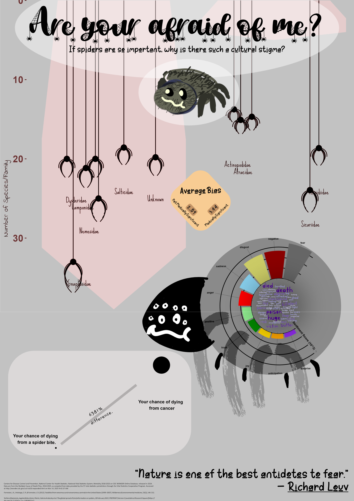

Bias against spiders in the news and what we can do about it
Author
Joshua Paul Cohen
Spiders, do you fear them?
People’s fear of the wilds is largely motivated by a broader fear of the unknown. But we can’t ignore the space outside our cities, because it will find its way inside…mainly the spider eyeballing you in the corner of your room right now.
I try not to judge people who are afraid of spiders, because there was a point in my life where I was afraid of them too. When you’re a kid, you learn about spiders through movies and TV, and once you’re taught to fear them the adults around you condition you to reinforce that feeling. But as I came of age, I decided that I didn’t want to be afraid anymore. And in that process, I realized that maybe I shouldn’t have been afraid to begin with. I learned that spiders aren’t the aggressive threat I thought they were and are just trying to live their lives just like we are. Only that the scope of their world is inconceivably more terrifying than ours. In fact, I learned that most spiders I’ll encounter are incapable of causing me much harm at all. So what taught me to be so scared of them?
I think that, when you’re young, you are mainly taught to think what other people think. And other people watched the news.
The bias in reporting of ecological topics is less talked of in the broader discussion of mainstream media bias, but it’s very prevalent. This is because generally as a society, we just like large and charismatic mammals, and dislike bugs. The media we consume is just a reflection of these attitudes, and the cycle continues. My since my awakening per say, I’ve been trying to think of how I could help other people break down this fear. A tall order I know, as I imagine most people have little interest in even doing so, but that won’t stop me from trying.
I stumbled upon a dataset by Mammola et al. (2022) about the very thing I wish people would think more about. It’s tabular compilation of news articles from around the world all about spiders, each row containing detailed info about what biases it may contain. It was the exact thing I wish more people would think about, so I made like a jumping spider and pounced on the opportunity to visualize it.
The dataset had a lot of information and allowed many possible questions to answer. At first I thought maybe I would visualize bias by country, or maybe bias by year. But the reality is that I just want you, reader, to think about how your impression of spiders might not even be your own. I have no delusions that you will overcome your fear just by reading this, doing so is a whole process. But my goal for you maybe, is to consider if you should.
Infographic

One of the ways the news tricks you is framing. Framing simply put is the way that information is presented. This could include aesthetics, word choice, or maybe even selectively picking bits of said info that suit a narrative. Framing isn’t necessarily a bad thing, sometimes the news we hear should be framed in a positive or negative light. But decisions to do so can also be harmful.
Spiders are a group of critters that are frequently hurt by this. They are frequently framed in a negative light because of stigma and playing into it increases website traffic and add revenue, but also because people tend to only think about spiders when the interaction is negative. That being said, we can try to paint spiders in a more positive light with the design choices of this infographic.
Design elements can be reduced down to general structure (graphic form), aesthetic elements (themes, colors, typography), direct messaging (titles, annotations, providing context), and DEI considerations (accessibility, equity, etc).
With the aesthetic elements, there’s a fine line between glamorization and feeding into the stigma. I chose a light grey and matte color scheme because this is a relatively neutral theme and colorization, while also keeping the spider-esque theme. The fonts I’ve chosen are either thematic or keep a casual, neutral tone.
The message of my infographic is pretty clear, that the stigma surround spiders is unfair to them, and the actual problem lies within ourselves. I accomplish this many ways. My sentiment analysis graph shows that public opinion in the news is predominantly negative by a pretty vast margin. My top chart shows that most of the spiders in the news aren’t even medically relevant, but a lot of them are misidentified to be so. And my last visualization in the corner, adds some context to the frame, that whatever you hear in the news, dying from a spider bite is exceedingly rare. I’ve also included a quote that I think highlights my takehome message.
For accessibility, I believe the color scheme is colorblind friendly. There is perhaps some DEI context in regards to how opportunities to experience nature are unequal along socioeconomic lines, which is itself worthwhile, it just wasn’t the focus of this project.
Code
Code from this project can be view by expanding the following chunks.
##~~~~~~~~~~~~~~~~~~~~~~~~~~~~~~~~~~~~~~~~~~~~~~~~~~~~~~~~~~~~~~~~~~~~~~~~~~~~~~## --##------------------------------ WEIGH THE BIAS---------------------------------## --##~~~~~~~~~~~~~~~~~~~~~~~~~~~~~~~~~~~~~~~~~~~~~~~~~~~~~~~~~~~~~~~~~~~~~~~~~~~~~~spider_news_weighted <- spider_news %>%# impacts to bias score assigned arbitrarilymutate(# account for NAsBite =replace_na(Bite, 1), Death =replace_na(Death, 1), Figure_species =replace_na(Figure_species, 1), Figure_bite =replace_na(Figure_bite, 1), # having an expert will reduce bias scoreExpert_arachnologist =replace_na(Expert_arachnologist, 1),Expert_doctor =replace_na(Expert_doctor, 1),Expert_others =replace_na(Expert_others, 1), # sensationalism give sever bias penaltySensationalism =replace_na(Sensationalism, 1),# multiple types of error will compoundTaxonomic_error =replace_na(Taxonomic_error, 1),Venom_error =replace_na(Venom_error, 1),Anatomy_error =replace_na(Anatomy_error, 1),Photo_error =replace_na(Photo_error, 1),Bite = Bite *1,Death = Death *1, Figure_species = Figure_species *1, Figure_bite = Figure_bite *2, # having an expert will reduce bias scoreExpert_arachnologist = Expert_arachnologist *-2,Expert_doctor = Expert_doctor *-1,Expert_others = Expert_others *-1, # sensationalism give sever bias penaltySensationalism = Sensationalism *5,# multiple types of error will compoundTaxonomic_error =case_when( Taxonomic_error !=0~ Taxonomic_error *2, Taxonomic_error ==0|is.na(Taxonomic_error) ==TRUE~1),Venom_error =case_when( Venom_error !=0~ Venom_error *2, Venom_error ==0|is.na(Venom_error) ==TRUE~1),Anatomy_error =case_when( Anatomy_error !=0~ Anatomy_error *2, Anatomy_error ==0|is.na(Anatomy_error) ==TRUE~1),Photo_error =case_when( Photo_error !=0~ Photo_error *2, Photo_error ==0|is.na(Photo_error) ==TRUE~1),Total_error = Bite + Death + Figure_species + (Taxonomic_error * Venom_error * Anatomy_error * Photo_error) )
Code
# function translates a vector of strings to englishtranslate_col <-function(col, j, k){# chunk sizen_iter <-50# split vector into chunkschunks <-split(col, cut(seq_along(col), length(col)/n_iter, labels=FALSE))# init empty vector for translated news titlestranslations <-c()# inits the loading parpb <-txtProgressBar(min = j, # Minimum value of the progress barmax = k, # Maximum value of the progress barstyle =3, # Progress bar stylewidth =50, # Progress bar width. char ="=") # Character used to create the barfor(i in j:k) {#---------------------# Code to be executed#---------------------# error handling, will pass chunk if translations <-tryCatch(expr = {# translate chunk translated <-google_translate(unlist(chunks[i]))# append translated chunk to rest of them translations <-rbind(translations, data.frame(x =matrix(translated, nrow=132, byrow=TRUE),stringsAsFactors=FALSE)) },# will just return NA if errorerror =function(e) {paste(NA) } )#---------------------# Sets the progress bar to the current statesetTxtProgressBar(pb, i)# waits 5 seconds before starting next chunk, to avoid overloading serversSys.sleep(5)}return(translations)close(pb) # ends progress bar}
Code
# Reason for splitting titles into chunks and running function multiple times is because of a "malformed URL" error. Possible causes of error:# # `google_translate()` is being passed strings containing characters or sequences of characters that are incompatible.# `google_translate()` struggles to handle this large of a dataset.# translate first half of titlesnews_translated_1 <-translate_col(spider_news$Title, 1, length(chunks)/2)# translate third quarternews_translated_2 <-translate_col(Filter(function(x) x !="No title", spider_news$Title), length(chunks)/2+1, (length(chunks)/2) +27)# translate some morenews_translated_3 <-translate_col(Filter(function(x) x !="No title", spider_news$Title), (length(chunks)/2) +28, (length(chunks)/2) +40)# translate restnews_translated_4 <-translate_col(Filter(function(x) x !="No title", spider_news$Title), (length(chunks)/2) +41, length(chunks))full_translations <-rbind(news_translated_1, news_translated_2, news_translated_3, news_translated_4)
Code
##~~~~~~~~~~~~~~~~~~~~~~~~~~~~~~~~~~~~~~~~~~~~~~~~~~~~~~~~~~~~~~~~~~~~~~~~~~~~~~## try sentiment analysis ----##~~~~~~~~~~~~~~~~~~~~~~~~~~~~~~~~~~~~~~~~~~~~~~~~~~~~~~~~~~~~~~~~~~~~~~~~~~~~~~# create corpustitle_corpus <- full_translations$x %>%as_vector() %>%VectorSource() %>%SimpleCorpus()# remove characters/attributes that would distrupt analysistitle_corpus_sentiment <- title_corpus %>%tm_map(tolower) %>%tm_map(removePunctuation) %>%tm_map(removeNumbers) %>%tm_map(removeWords, stopwords('english')) %>%tm_map(stripWhitespace)# turn corpus into matrixtdm <-TermDocumentMatrix(title_corpus_sentiment) %>%as.matrix()# tabulate counts of all wordsrow_sums <-rowSums(tdm)# convert counts to tibblesentiment_tib <-enframe(row_sums, name ="word", value ="count")
Code
# Convert to data frame (same as above)afinn_prep_df <-as_data_frame(full_translations) %>%rename('text'='x')# Convert to lowercase (same as above)afinn_prep_df$text <-tolower(afinn_prep_df$text)# Remove punctuation (same as above)afinn_prep_df$text <-gsub("[[:punct:]]", "", afinn_prep_df$text)# Unnest the text into words (same as above)text_words <- afinn_prep_df %>% tidytext::unnest_tokens(word, text)# depluralize wordsdeplural <- text_words %>%mutate(word = pluralize::singularize(word))
Code
# Load the AFINN lexiconafinn <-get_sentiments("afinn")# Join the text words with the AFINN lexiconsentiment_analysis_afinn <- deplural %>%inner_join(afinn, by ="word")
Code
# prepare new wordcloud dfwordcloud_prep <-data.frame(names(row_sums), as_tibble(row_sums)) %>%rename(word = names.row_sums., frequency = value) %>%# make all plural words singularmutate(word = pluralize::singularize(word)) %>%# sum all frequencies of wordsgroup_by(word) %>%reframe(frequency =sum(frequency)) %>%# omit "spider" as it is common and reduntantfilter(!word %in%c("spider")) %>%inner_join(afinn, by ="word")
Code
# init save png wrapperpng("figs/sent_wordcloud.png", width =1000, height =1000, res =300, bg ="transparent")wordcloud(words = wordcloud_prep$word,freq = wordcloud_prep$frequency,max.words =75,random.order =TRUE, # order in which words are plotted is randommin.freq =5,colors =tail(brewer.pal(9, 'Purples'), 5),scale =c(3, 0.5), # size difference between high a low count wordsrot.per =0, # all words horizontaluse.r.layout =FALSE, family ="Kirang Haerang",)# end of png wrapperdev.off()
Code
#...................Try NRC Sentiment Analysis...................# get nrc dictionarynrc <-get_sentiments("nrc")# Join the text words with the NRC lexiconsentiment_analysis_nrc <- text_words %>%inner_join(nrc, by ="word")# Summarize sentiment countssentiment_summary_nrc <- sentiment_analysis_nrc %>%count(sentiment, sort =TRUE)
Code
# Create a bar chart of sentiment countsnrc_plot <-ggplot(sentiment_summary_nrc, aes(x =reorder(sentiment, n), y = n*10^-3, fill = sentiment)) +geom_bar(stat ="identity", show.legend =FALSE) +coord_radial(inner.radius =0.4,start =-1.2*pi, end =0.2*pi # sets 3/5 circle about ) +labs(x ="Sentiment",y ="Count") +scale_fill_manual(values =c("red", "orange1", "#cccc66", "grey40", "gold", "darkred", "lightgreen", "skyblue", "purple2", "green4")) +theme_minimal() +theme(axis.title =element_blank(),plot.title =element_text(family ="Ink Free", face ="bold"), axis.text.theta =element_text(family ="Ink Free", face ="bold", color ="black"), panel.grid.major.y =element_line(color ="black", linewidth =1), panel.grid.major.x =element_line(color ="grey40") )# draws axis labelnrc_plot <- cowplot::ggdraw(nrc_plot) + cowplot::draw_text('Sentiment Score (10^3)', x =0.7, y =0.32, angle =307, size =11, family ="Just Me Again Down Here", fontface ="bold")nrc_plotggsave('figs/myplot.png', nrc_plot, bg='transparent', width =10, height =8)
Code
#...............Getting medically relevant spiders...............# get all unique speciesunique_sp <- spider_news$Species %>%unique() %>% tm::stripWhitespace()# subset for medically relevant speciesmedically_rel_sp <- unique_sp[ ( stringr::str_detect(unique_sp, "Loxosceles") ==TRUE| stringr::str_detect(unique_sp, "Sicarius") ==TRUE| stringr::str_detect(unique_sp, "Hexophthalma") ==TRUE| stringr::str_detect(unique_sp, "Latrodectus") ==TRUE| stringr::str_detect(unique_sp, "Phoneutria") ==TRUE| stringr::str_detect(unique_sp, "Atrax") ==TRUE| stringr::str_detect(unique_sp, "Hadronyche") ==TRUE| stringr::str_detect(unique_sp, "Missulena") ==TRUE ) &is.na(unique_sp) ==FALSE ]# assign binary var for medically relevant or notspider_news_weighted <- spider_news_weighted %>%mutate(medically_relevant =case_when( Species %in% medically_rel_sp ~1,.default =0 ) )
Code
# define function to calculate modeget_mode <-function(x) { u <-unique(x) tab <-tabulate(match(x, u)) u[tab ==max(tab)]}# get mean bias by familyfam_med_counts <- spider_news_weighted %>%group_by(Family) %>%summarize(mean_bias =mean(Total_error), medically_relevant =get_mode(medically_relevant)) %>%ungroup() %>%mutate(x_placement =case_when( medically_relevant ==0~seq(-0.55, 0.30, length.out =n()), medically_relevant ==1~seq(0.75, 1.35, length.out =n()) )) %>%mutate(Family = tm::stripWhitespace(Family))# filter for portion of speciesspider_pnt_select <-filter(fam_med_counts, (medically_relevant ==0& mean_bias >3.5) | medically_relevant ==1)# get mean bias by medical relevancemed_rel_counts <- fam_med_counts %>%group_by(medically_relevant) %>%summarize(mean_bias =mean(mean_bias), count =n())# set up df to plot spider legscurve_params <-data.frame(x = spider_pnt_select %>%select(x_placement) %>%slice(rep(1:n(), each =8)), x_add =data.frame(x_add =c(0.01, 0.025, 0.035, 0.05, -0.01, -0.025, -0.035, -0.05)) %>%slice(rep(row_number(), 1)), y = spider_pnt_select %>%rename(y = mean_bias) %>%select(y) %>%slice(rep(1:n(), each =8)), y_mult =data.frame(y_mult =c(7.0-1.3, 6.9-1.3, 6.7-1.2, 6.2-0.8)) %>%slice(rep(row_number(), 2)), y_end_mult =rep(5, nrow(spider_pnt_select)),curvature =data.frame(curvature =c(0.5,0.5,0.5,0.5, -0.5,-0.5,-0.5,-0.5)) %>%slice(rep(row_number(), 1)))
Code
med_plot <-ggplot() +# plot pointy bars geomwindmill::geom_windmill(data = med_rel_counts, aes(x = medically_relevant, y = count,, group = medically_relevant ), fill ="burlywood", alpha =0.5) +# add bias counts ggplot2::annotate("text", x =c(0,1), y =41, label =c(round(med_rel_counts$mean_bias[1], 2), round(med_rel_counts$mean_bias[2], 2)), family ="Mansalva", size =5.5) +# labeling for the prior ggplot2::annotate("text", x =c(0,1), y =44, label ="~~~~Average Bias~~~~", family ="Gaegu", size =5.5) +# add points for lolipop chard geom_point(data =filter(fam_med_counts, medically_relevant ==0& mean_bias >3.5), aes(x_placement, mean_bias*5), size =4) +geom_point(data =filter(fam_med_counts, medically_relevant ==1), aes(x_placement, mean_bias*5), size =4) +# segments for loliipop chartgeom_segment(data =filter(fam_med_counts, medically_relevant ==0& mean_bias >3.5), aes(x = x_placement, xend = x_placement, y =0, yend = mean_bias*5 )) +geom_segment(data =filter(fam_med_counts, medically_relevant ==1), aes(x = x_placement, xend = x_placement, y =0, yend = mean_bias*5 )) +####--------LEGS START HERE---------- geom_curve( data =filter(curve_params, curvature ==0.5),aes(x = x_placement+x_add,y = y*y_mult*0.98,xend = x_placement,yend = y*5, ), curvature =0.5 ) +geom_curve( data =filter(curve_params, curvature ==-0.5),aes(x = x_placement+x_add,y = y*y_mult*0.98,xend = x_placement,yend = y*5, ), curvature =-0.5 ) +####--------END LEGS----------# family text labelsgeom_text(data = spider_pnt_select, aes(x = x_placement,y = mean_bias *log(mean_bias*4)+14,label = Family, family ="Sue Ellen Francisco " ),check_overlap =TRUE, position =position_dodge2(padding =1, width =0.1) ) +# make continuous scale appear discretescale_x_continuous(labels =c("","Not Medically Signficant", "", "Medically Significant", ""), breaks = scales::extended_breaks()) +# turn graph upside downscale_y_reverse(expand =c(0,0), limits =c(50, 0)) +# allow drawing outside of plot areacoord_cartesian(clip ="off") +# give color for biasscale_fill_gradient(high ='brown2', low ='brown4', breaks =NULL) +labs(x ="", y ="Number of Species/Family", title ="Of the spiders in the news,\nwhich should we even be concerned about?") +theme(panel.background =element_blank(), axis.text =element_text(family ="Indie Flower", face ="bold",size =15), axis.title =element_text(family ="Indie Flower"), plot.title =element_text(family ="Jua", size =20, hjust =0.5))med_plotggsave('figs/med_plot.png', med_plot, bg='transparent', width =8, height =10)
Code
deaths_clean <- deaths %>% janitor::clean_names() %>%select(-jurisdiction_of_occurrence, -month, -year) %>%# get means of all cause of death columnssummarize(across(everything(), ~mean(.x, na.rm =TRUE))) %>%# recreate table with cause of death and total fatality columnspivot_longer(cols =everything(),names_to ="cause",values_to ="death_tot") %>%# get death per 100k peoplemutate(death_100k = death_tot/100000) %>%# filter for common causesfilter(cause %in%c("assault_homicide", "motor_vehicle_accidents", "malignant_neoplasms")) %>%# append wildlife death statistics from Forrester, Holstege & Forrester (2012)rbind(c("bite_from_all_nonvenomous_animals", 121.3, 121.3/100000), c("bite_from_all_venomous_animals", 79.5, 79.5/100000), c("bite_from_a_venomous_spider", 7.8, 7.8/100000)) %>%# convert new cols to numericmutate(death_tot =as.numeric(death_tot),death_100k =as.numeric(death_100k)) %>%# sort in order of chance of deatharrange(death_100k) %>%# assign positioning value along y axismutate(y_val =ordered(c(1,2,3,4,5,6))) %>%# just filter for spider bites and cancer, only compare thosefilter(cause %in%c("malignant_neoplasms", "bite_from_a_venomous_spider"))deaths_clean
Code
chance_plot <-ggplot(deaths_clean, aes(factor(cause, levels = cause), y_val, size = death_100k)) +geom_point(show.legend =FALSE) +# make sizes representative of difference between spider bites and cancer deathsscale_radius(range =c(1, 20)) +theme_minimal() +# add connecting line from both pointsgeom_segment(aes(x=1+0.2, y =1+0.2, xend =2-0.2, yend =2-0.2), size =3, alpha =0.1) +# add text labels for both data pointsgeom_text(aes(label =c("Your chance of dying \n from a spider bite.", "Your chance of dying \n from cancer")), size =4, nudge_x =c(0,0.0), nudge_y =c(0.25, -0.4),angle =c(0, 0), family ="Indie Flower", fontface ="bold") +# add difference between chance of death ggplot2::annotate("text", x =1.5, y =1.5, angle =30, size =5, family ="Gaegu",label =paste0( round(deaths_clean[2,3]/deaths_clean[1,3]), "% \n difference.")) +theme(axis.title =element_blank(),axis.text =element_blank(),panel.grid =element_blank())chance_plotggsave('figs/chance_plot.png', chance_plot, bg='transparent', width =10, height =8)
Citations:
Stefano Mammola, Jagoba Malumbres-Olarte, Valeria Arabesky et al. The global spread of (mis)information on spiders, 28 February 2022, PREPRINT (Version 1) available at Research Square [https://doi.org/10.21203/rs.3.rs-1383492/v1]
Centers for Disease Control and Prevention, National Center for Health Statistics. National Vital Statistics System, Mortality 2018-2023 on CDC WONDER Online Database, released in 2024. Data are from the Multiple Cause of Death Files, 2018-2023, as compiled from data provided by the 57 vital statistics jurisdictions through the Vital Statistics Cooperative Program. Accessed at http://wonder.cdc.gov/ucd-icd10-expanded.html on Mar 14, 2025 9:42:37 AM
Forrester, J. A., Holstege, C. P., & Forrester, J. D. (2012). Fatalities from venomous and nonvenomous animals in the United States (1999–2007). Wilderness & environmental medicine, 23(2), 146-152.